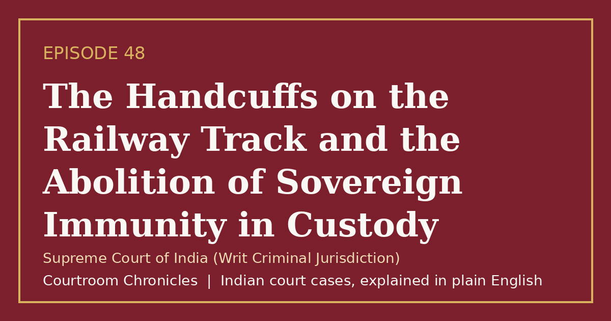

Episode 48
The Handcuffs on the Railway Track and the Abolition of Sovereign Immunity in Custody
A landmark constitutional judgment dismantled the shield of sovereign immunity to hold the state strictly liable for custodial violence.
Constitutional lawFundamental rightsCriminal procedureCriminal lawHuman dignity
#CourtroomChronicles#IndianLaw#CustodialJustice#HumanRights#PoliceAccountability#ConstitutionalLaw#SupremeCourtOfIndia

Listen
- Court
- Supreme Court of India (Writ Criminal Jurisdiction)
- Date of Decision
- March 24, 1993
- Nature of Victim
- Twenty-two-year-old rural laborer detained in police custody without formal arrest recording
- Physical Clue
- Body discovered on railway tracks with regulation police handcuffs still fastened to the wrist
- Forensic Finding
- Multiple traumatic lathi contusions across the back with complete absence of railway crush injuries on the torso
Key takeaways
- The state is strictly liable for any custodial torture or death occurring within police control.
- Sovereign immunity cannot shield government authorities from paying constitutional damages for human rights abuses.
- Custodial death investigations mandate rigorous judicial inquiries and criminal prosecution of culpable police personnel.
The case in brief
When a young village laborer was rounded up by local police without formal recording of arrest, he was placed in a rural outpost where his mother brought him food that evening. The following afternoon, his mutilated body was discovered lying across railway tracks two kilometers away, with official police handcuffs still locked to his wrist. Police authorities claimed the detainee had escaped through a window and been struck by a speeding goods train.
Refusing to accept the official accident narrative, the victim's impoverished mother sent a handwritten letter to the Chief Justice of India, which was converted into a constitutional writ petition. A judicial inquiry ordered by the Supreme Court revealed that the victim had suffered over forty blunt force contusions inflicted by police batons while in custody, thoroughly disproving the police claim of an accidental train collision.
The Supreme Court rejected the defense of sovereign immunity and held the state strictly liable under public law for custodial death. The bench ruled that the constitutional remedy under Article 32 operates independently of private civil suits, establishing that the state bears an absolute constitutional obligation to preserve the life and dignity of every person detained in police custody.
Timeline
- Unrecorded Custody
A rural laborer is detained by outpost police without formal arrest documentation or magistrate production.
- Discovery on Tracks
Railway trackmen discover the victim's battered body on steel tracks with police handcuffs still attached.
- Mother's Letter Petition
The victim's mother dispatches a handwritten petition to the Supreme Court, prompting constitutional intervention.
- Judicial Inquiry Findings
A district judge's inquiry confirms brutal custodial beatings and refutes the police escape story.
- Landmark Public Law Verdict
The Supreme Court rejects sovereign immunity and awards monetary damages for custodial deprivation of life.
What the court decided
Writ petition allowed; State directed to pay one lakh fifty thousand rupees in monetary compensation to the deceased victim's mother, alongside directives to prosecute culpable police officers.
Key holdings
- The defense of sovereign immunity does not apply to public law remedies under Article 32 or Article 226 for fundamental rights violations.
- The State is under a strict constitutional obligation to account for the safety and physical well-being of every person taken into custody.
- Monetary compensation in constitutional writ petitions is awarded to penalize state lawlessness and provide immediate palliative redress to victims' families.
- Forensic proof of multiple custodial injuries shifts the legal burden onto law enforcement officers to demonstrate lawful treatment.
Legal principles
Strict Liability for Custodial Violence
When an individual suffers death or injury while in police custody, the state is strictly liable to explain the circumstances and compensate the victim.
In this case: The court held that police officers who held the young laborer in handcuffs could not evade liability by inventing a fabricated escape narrative.
Public Law Remedy Independent of Sovereign Immunity
Constitutional courts can enforce monetary damages against the state for constitutional torts, overriding colonial doctrines that the state can do no wrong.
In this case: The bench established that sovereign immunity applies only to private law tort claims and cannot defeat fundamental rights under Article 21.
Epistolary Jurisdiction of Constitutional Courts
The Supreme Court can treat an informal letter or telegram from an underprivileged citizen as a formal constitutional writ petition.
In this case: The court acted upon a simple handwritten letter from an illiterate mother to initiate a full-scale judicial inquiry into police brutality.
The law then and now
The offense occurred in December 1987, and the substantive constitutional review proceeded under Article 32 in conjunction with the Indian Penal Code, 1860, the Code of Criminal Procedure, 1973, and the Indian Evidence Act, 1872, prior to the implementation of the Bharatiya Sanhitas.
Left: the law applied to this case. Right: the matching provision today (the new criminal codes apply only to offences on or after 1 July 2024).
- Indian Penal Code, 1860Section 330Voluntarily causing hurt to extort confession, or to compel restoration of propertyBharatiya Nyaya Sanhita, 2023Section 118Voluntarily causing hurt or grievous hurt to extort confession, or to compel restoration of property
Re-enacted with enhanced penal consequences for law enforcement personnel inflicting custodial hurt to extort confessions.
Retained mandatory judicial magistrate inquiry requirements for all deaths, rapes, or disappearances occurring in police custody.
Re-enacted maintaining the statutory evidentiary principle that facts occurring inside closed police precincts must be proved by the custodians. See all 6 episodes on this provision →